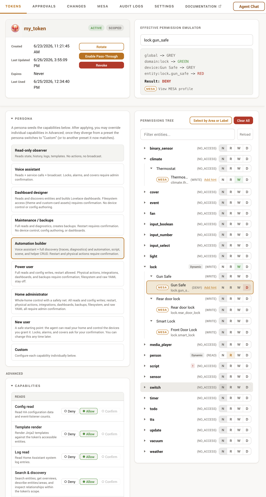
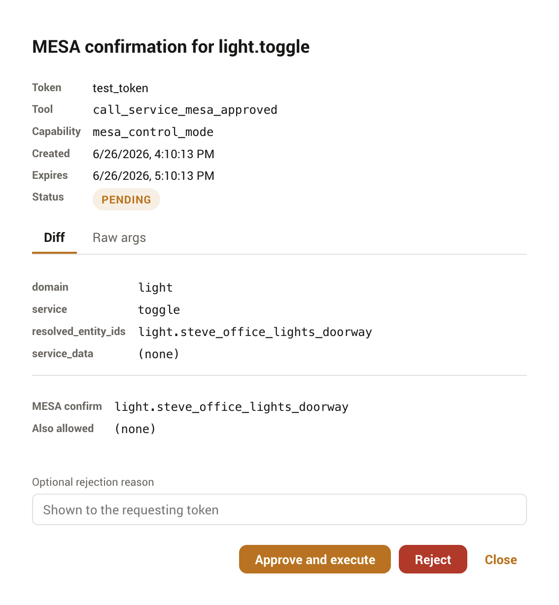

Panel guide
Everything Phoenix MCP does happens in its sidebar panel. It has six tabs, Tokens, Approvals, Changes, MESA, Audit Logs, and Settings. This guide walks through each, and the panel-only tools that make scoping a token quick.
Tokens
The Tokens tab lists every active token with its status and last use. From here you create tokens, open one to edit it, or launch the guided setup that walks a first-timer all the way to a tested connection (see Quick start).
Opening a token shows its detail page: the capability matrix, the permission tree, and lifecycle actions (rotate the raw value, revoke the token). The capability matrix is where you pick a persona or set individual capabilities to deny, allow, or confirm.
Settings presets (optional)
With the Token settings presets toggle enabled in Settings, each token gains a Presets card: named snapshots of its complete configuration (capabilities, permissions, rate limits, pass-through) you can switch between, for example a locked-down daily preset and a broader maintenance one on the same token. Enabling the toggle saves every token's current settings as its first preset ("Default preset", renameable inline).
The token is always "in" one preset, and edits you make are that preset's unsaved changes: switching to another preset first saves them into the outgoing preset (the dialog lists exactly what), then applies the target, so nothing is lost and there are no save prompts. Applying the preset you are already in does the opposite: it reverts the token to the preset's saved state, discarding the listed unsaved changes. The active preset cannot be deleted, and applying a preset that would enable pass-through asks for the same confirmation as enabling it by hand. Switching is admin-only; a connected agent cannot change its own preset, and after a switch the agent is nudged in-band to refresh its tool list (see the audit log's preset column for per-request attribution).

Painting the permission tree
The tree groups entities by domain and device. You rarely set every node: the usual pattern is to set a whole domain or device, leave the children grey so they inherit, then use RED to carve out exceptions. See Permissions for how the states resolve. Three panel tools make this faster.
Each row also carries a small MESA control, a + to create a profile or MESA when one already exists, which opens the profile editor over the tab without losing your place. It writes at the level of the row you clicked: a domain group authors a domain profile, a device group authors a device profile covering every entity that device owns, and an entity row authors an entity profile. Permissions and MESA are independent, so a profile written here changes what any token may do with that entity by nature, not just this one. The MESA page covers what the levels mean.
Select by Area or Label
The Select by Area or Label button bulk-applies one state to a group of entities at once. Pick a tab (Area or Label), choose the group, choose the state to apply (Read, Write, Deny, or Remove grant), and Phoenix MCP sets each matching entity.
It applies to the entities in the group now, not forever
Select-by grants access to the entities currently in the chosen area or label, one entity at a time. Entities added to that area or label later are not picked up automatically. For coverage that follows future entities, set a domain-level grant instead.

The effective-permission emulator
The emulator shows what Phoenix MCP will actually decide for any entity. Type an entity ID, or click one in the tree or summary, and Phoenix MCP runs the full two-pass resolver, then shows the result, which ancestor decided it, and the hint text if one is set. If a result surprises you, the path output names the ancestor that is overriding it.

The permission summary
A compact, sortable table of every node set to something other than GREY. It lists the node type, friendly name, ID, and current state. Clicking a row loads that entity into the emulator. An empty summary means no grants exist and the token has no access to anything.
Entity hints
After granting access to an entity, you can attach an optional hint that is surfaced to the connected AI, to clarify what an entity represents, for example "This lamp is on Rachel's desk, not the ceiling light." Hints are capped at 200 characters and come in two scopes:
- This token only
- A per-token hint, stored on the permission node. It is visible only to this token and takes precedence over a global hint.
- All tokens
- A global hint for the entity, applied to every token that can see it. Useful when the clarification is about the entity itself, not one agent's view of it.

Approvals
When a capability or a MESA entity is set to confirm, the held action lands in the Approvals queue. The tab badge shows the pending count, and a notification can deep-link straight to a specific approval. Each row shows the requesting token, the action, and a review payload (for file and YAML writes, a redacted before/after diff). Approve to run the saved action, or reject with an optional reason.
When more than one approval is waiting, each row gains a tick box and a Select all control, so several can be approved in one action instead of one click at a time. Each one is still validated, executed and audited individually, exactly as if you had clicked Approve on each: batching changes how many times you click, not what is checked. Because Home Assistant writes are not transactional, a batch cannot be all-or-nothing, so it stops at the first failure and tells you what was applied, where it stopped and why, and how many are left. Anything after the failure is untouched and still waiting, so you can deal with the cause and approve the rest. Approvals you do not tick simply stay in the queue; nothing is sent back to the agent, though they still expire on the usual timeout.
The same approval appears here, in Agent Chat, and as a Home Assistant notification. Acting on it in one takes the buttons away in the other two immediately. While it runs it reads Being processed and offers nothing, and becomes actionable again if the action fails.
A dashboard layout change also offers a Diff | Preview switch in the diff's toolbar, rendering the proposed cards with live entity states (Home Assistant's own card renderer, so it looks exactly as it would on the dashboard, in your active theme) instead of just the raw config; the cards are display-only, so nothing you click in a preview can actuate a device.
An Energy dashboard change offers the same Diff | Preview switch, but it renders the Energy configuration itself: your sources and individual devices as a list, with added rows marked, removed rows marked, and a change shown as the old value directly above the new one. Energy has no card layout to draw, and Home Assistant's own energy cards read the saved preferences rather than the pending ones, so a card here would show your current dashboard instead of the change you are approving. Rows pair by statistic, so renaming a device reads as one substitution rather than an unrelated removal and addition.
Every before/after diff, on this tab and on Changes, also has a code editor button in the same toolbar. It hands both panes to Home Assistant's own editor, the one you already see in the ESPHome add-on, with syntax colours and line numbers, which makes a long device YAML far easier to read than a plain monospace block. The trade is stated in the toolbar when you switch: the code view cannot tint changed lines, so use the line diff when the question is what changed and the code view when the question is what the file says. The choice is remembered separately from the side-by-side and stacked setting.
If a proposed card fails to render (Home Assistant's "Configuration error" card), a Reject with error message button appears next to Approve/Reject that rejects with that error as the reason in one click, so the agent knows exactly what to fix. Rejection reasons are relayed to the agent and shown on the Agent Chat approval card, not just a bare "rejected". A reason typed here but not submitted is kept with that approval, so rejecting from the Agent Chat card (which has no reason box of its own) still sends it.
The panel subscribes to Home Assistant's event bus, so a new or resolved approval refreshes the queue immediately; the pending-count badge and the queue also poll every few seconds as a backstop in case an event is missed.

MESA
The MESA tab is where you author the per-entity safety profiles. It lists profiles by control mode and lets you edit profiles at the entity, device, area, integration, domain, and deployment-default levels, with canonical-tag autocomplete and a validation view for issues and orphans. A Suggested profiles section scans for under-protected entities, risky devices with no coverage, and automations whose actions reach them, and offers each profile as a one-click Apply, a prefilled Review, or a persistent Dismiss. The concept, the modes, and the editor's guardrails are covered on the MESA page.
Audit Logs
The Audit Logs tab is a filterable view of the request log: request ID, time, token, method, resource, outcome, and client IP. Filter by token or outcome to trace what an agent did. The log's retention and storage are described in Operations.
Changes
The Changes tab is the configuration history for everything an agent builds. It opens on a feed of recent create, edit, and delete actions across automations, scripts, scenes, helpers, blueprints, dashboards, entity-registry edits, ESPHome device YAML, the raw configuration.yaml, and scoped file writes, and refreshes live as new changes land. Rows carry a one-line description of what actually changed where the resource name alone would not say: a dashboard card operation shows the card and its position ("added custom:apexcharts-card (view 0, section 6)"), a whole-layout or raw file write shows the card-count or size movement, a one-key configuration.yaml edit names the key, and an entity edit lists the changed fields.
Selecting a row opens that version's before/after diff directly, rendered as YAML for structured resources or as a line-highlighted text diff for raw configuration.yaml and file writes, with the resource's other versions in a timeline beside it so you can step through its history.
Each pane has its own Restore this configuration button, so you re-apply the Before (to undo a bad edit) or the After (to re-apply the change) explicitly. A button is hidden when restoring it would do nothing: an empty pane, like the Before of a freshly created resource, or the After of the resource's latest version, which is already its current config. A raw snapshot too large to have been stored shows a notice and cannot be restored.
Restore edits the resource if it still exists, or recreates it if it was deleted, and is itself recorded as a rollback you can undo in turn. Automations, scripts, scenes, and blueprints come back under their original id, so re-restoring the same delete is idempotent; a recreated helper gets a fresh id, because Home Assistant's storage collection assigns it. A few snapshots refuse to restore rather than restore incorrectly: a config whose snapshot contains YAML tags such as !secret, and a deleted entity-registry entry, which belongs to its integration and cannot be recreated; the admin API reference lists these. Storage and retention are described in Operations.
A dashboard version also offers the same Preview toggle as the Approvals tab, with a Before/After switch so you can see what the layout looked like on either side of the change, not just the config difference; unlike the Approvals card (which previews only the proposed After layout), a version records both sides, so you can preview the Before as well whenever the version has one. A side with no snapshot is disabled, the same rule as the Restore buttons: a resource's first-ever layout has no Before, and a deletion has no After. Restore stays a diff-view action.
Settings
The Settings tab holds the global, deployment-wide options: the kill switch, logging controls, the rate-limit notification, the MESA mode, the audit buffer size, and the experimental toggles (in-context MESA profile buttons, and token settings presets). These are detailed in Operations. It also holds the Agent Chat card, where you configure an Anthropic, DeepSeek, OpenAI, Gemini, Grok, Kimi, Meta, MiniMax, OpenRouter, NVIDIA, Ollama, or Ollama Cloud provider and set the chat memory limit and the steps-before-check-in limit for the in-panel chat.
Three more cards on this tab connect Phoenix MCP to Home Assistant's own AI features rather than an external client. The Voice Agent and Assist Tool Provider cards are two ways to put Phoenix MCP behind Assist: the first runs Phoenix MCP's own model as a conversation agent, the second hands a bound token's tools to a model another integration supplies. The AI Task card registers Phoenix MCP as an AI Task entity so automations can generate data through it. Each runs on a token you choose, with the same scope, approvals, and audit as the rest of Phoenix MCP.
Language and theme
The Integration information card carries two display preferences. Both are per-browser rather than deployment-wide, so each admin sets their own and neither is written to Phoenix MCP's storage or shared between users.
Language chooses the panel language. Phoenix MCP ships English and Simplified Chinese (zh-Hans). Auto is the default and follows the language set on your Home Assistant user profile, so in most cases there is nothing to choose; pick a specific language only when you want the panel to differ from the rest of Home Assistant. Every option is named in its own script, so you can find yours whatever the panel happens to be showing. The choice applies to the Agent Chat window and the in-context MESA buttons as well, and takes effect immediately without a reload.
A few things stay in English on purpose rather than being missed. The six per-token sensors keep English names, because Home Assistant builds their entity_id from the display name the first time they are registered and a translated name would give a fresh install different entity ids from every other install. Agent-facing text is also never translated: tool descriptions, the skill document, and the errors an agent reads stay English so a model's behaviour does not change with your display language. The name Phoenix MCP itself is a brand mark and stays in Latin script in every language, which is also how Home Assistant treats its own name; several places name this integration inside Home Assistant's own interface, where it cannot be localized at all.
Theme is light, dark, or follow-the-system, and behaves the same way.
Agent Chat
The Agent Chat window lets you talk to Home Assistant without an external client: Phoenix MCP runs the agent itself on a token you pick, with the same scoping, capabilities, and approvals. By default it floats over the whole Home Assistant interface, not just the Phoenix MCP panel. Open it from the Agent Chat button in the panel header. The Create Token dialog offers a Set up Agent Chat option that opens Settings so you can add a provider account first, and it is the recommended path through the guided setup's "Choose how to connect" step, which sets up a provider account and opens the window for you. See the Agent Chat guide.